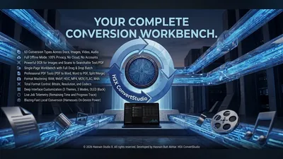
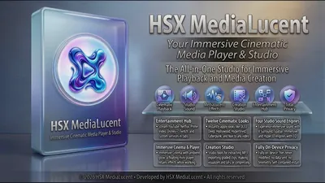
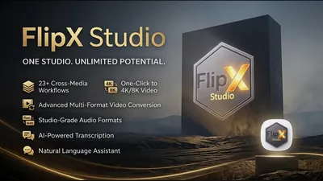
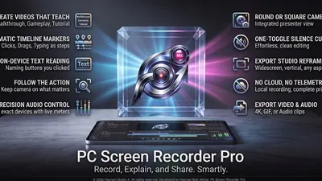
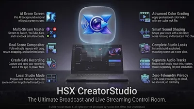
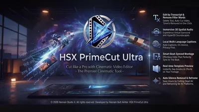
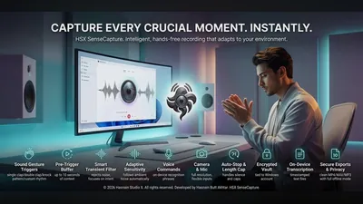
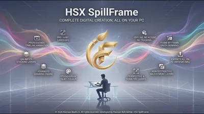

Video editing, capture and conversion apps for Windows
Editing, screen recording, capture and conversion. The common thread is that the processing happens on your own CPU or GPU rather than on a server you upload to and wait for.
Why these run on your own machine
For anyone working with footage or long recordings, that is a practical difference before it is a privacy one. Media files are large. Uploading an hour of video to be processed and downloading it again costs more time than the processing itself, and it puts an unreleased edit on someone else’s disk. Local processing removes both problems at once.
What to check before you buy anything in this category
- Whether your files leave the machine
- Any tool that processes in the cloud has a copy of your footage for as long as the job runs, and often longer.
- What formats it will still open in five years
- Playback and conversion tools are worth keeping. A tool tied to a service is only as durable as the service.
- Whether there is a watermark or an export limit
- A trial that watermarks output is fine. A purchase that still limits exports is not.
8 video & capture applications available now

ConvertStudio Pro Windows Convert documents, images, video and audio locally Convert documents, images, video, and audio formats All conversion runs locally on your device Your files never uploaded to any server Full details
MediaLucent Pro Windows Streaming hub + media player with cinematic grade & DSP engines Streaming hub: YouTube, Netflix, Spotify, Prime Video, Disney+, Twitch 12 cinematic color grades + 4 DSP audio engines including Hyper 3D Cinema Mode with ambient glow and floating mini-player Full details
PC Media Converter Pro Windows Convert audio, video, images, and PDFs locally Convert audio, video, image, and PDF files AI-assisted presets and smart output settings Batch processing with clear progress tracking Full details
PC Screen Recorder Pro Windows Record your screen and turn it into a step guide Screen and audio capture with chapters and markers Automatic step lists turned into written guides Still-frame capture during a recording Full details
PC Stream Studio Ultra Windows Local-first creative studio for Windows Full creative workflow running locally on your PC No cloud upload, no accounts required Zero telemetry and no data collection Full details
PC Video Editor Ultra Windows Local video editor: decode, edit, grade and export on-device Import, edit, grade and export video entirely on-device Decoding and encoding run locally on your PC Footage never uploaded or transmitted externally Full details
SenseCapture Pro Windows Sound-triggered camera and voice recorder Sound-triggered photo and audio/video capture Configurable trigger sensitivity and cooldown Recordings never leave your device Full details
SpillFrame Studio Windows Drawing and animation studio Drawing tools with frame-based animation Onion-skin frame workflow Artwork and projects stay on-device Full detailsQuestions about video & capture apps
Are exported files watermarked?
No. Once an application is purchased, what it produces is a clean file with no watermark and no export limit.
Do these apps upload my footage anywhere?
No. Conversion, capture and editing all run on your own hardware. There is no upload step, which is also why large files are not slow to work with.
Can I record my screen and edit it in the same place?
Recording, editing and conversion are separate applications with separate jobs, and each one writes standard files the others open directly.
Can I use these commercially?
Yes. A purchased licence covers the work you produce with it.
Other parts of the catalogue
Full Windows catalogue · Privacy policies · About the studio
Hasnain Studio X™ is a trade mark of Hasnain Studio X. Product names shown on this page are trademarks of Hasnain Studio X.